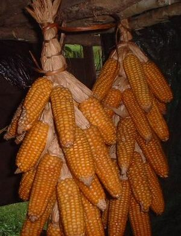

benì 
/bɔniʔ/
n.
“seed”
n.
seed, for planting
Wrd.Gloss: seed
Ka benì iyan ke me behas te minsan nekey ne pinamula ne eggingahuwen wey igpamula red man-e. Ka duma igbubul wey igtuwil ne ka duma degma igsawed. Nakalkalasi ka karakelan te benì wey amana ne susuluhi ka klasi kayi.
Impamula kud e ka me benì diyè te keddiey ne kamet.
I have already planted the seeds there in my field.
Syn. bekeg
Syn. pungu
Syn. similya
Eng. seed
Tag. binhî
Ceb. binhì
Ilo.: bín-i
OCM: Annual Cycle (221), Ethnobotany (824)
Online dict status: -
Usage level: F
v.
for someone (egbebenì, migbebenì/imbebenì, agent, eg><ø-rdpCV-) to prepare seeds for planting (egbenien, imbenì/migbenì/pigbenì, benia, eg><en-)
Ke sapulù ka pitsay egsameen ka sabeka su eyew egbenien.
If you have ten pitsay plants, leave one aside to go to seed.
Eng. prepare for seeds; go to seed
Online dict status: -
Usage level: R
Updated by: RJH,JLM,TME,RJH,TME,RJH,RAA,QDL
Last updated: 17/Nov/2009
This page last updated: 19/May/2012
Copyright © 2009-2010, Matigsalug Language Christian Association, Inc